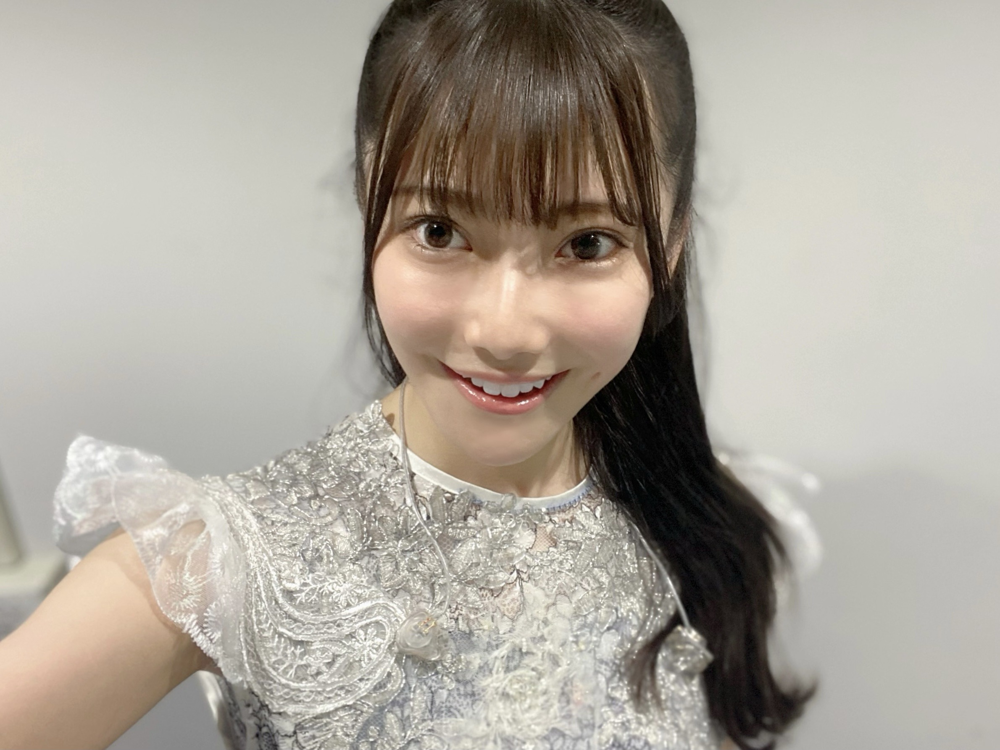
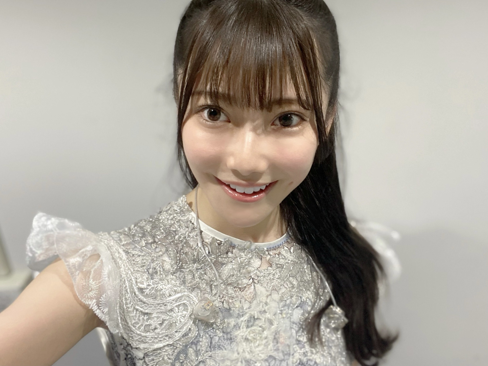

2020/1208Tue影ナレとOVERTURE。黒見明香(16)
「新4期生の "新" 取ってもいいんじゃないかな？」
ライブ後にふと、そんな言葉を頂きました。。。
もちろん、まだまだ
足りていない事、出来ない事ばかりを
痛感して申し訳なく、反省をくり返す日々です...
けれども、励ましでも、そんな言葉を
かけて貰えたこと。。
じわーっとまた涙が込み上がってきて
忘れられない記念日になりました。
＊
寒いね〜！今日も一日お疲れ様でした✩︎⡱
ココを見つけてくださり ありがとうございます♪
乃木坂46 ４期生の黒見明香です。
すこーしだけ自己紹介させてください☺︎
♪:*:･･:*:･･:*:･･:*:･･:*:･･:*:･♪:*:･･:*:･･:*:･･:*:･･:*:･･:*:･♪
黒見 明香（くろみ はるか）
2004年1月19日生まれ 16才
香港生まれ・東京都出身です
あだ名： くろみん・黒見ちゃん
3の倍数9・6・3(くろみ)
と覚えてもらえたら嬉しいです♪
♪:*:･･:*:･･:*:･･:*:･･:*:･･:*:･♪:*:･･:*:･･:*:･･:*:･･:*:･･:*:･♪

-:-:୨୧:-:- 大好きで大切な16人のかけがえのない仲間です✨（公式の写真とちょっぴり違うんだよ〜探してみてね☺︎笑）
【 乃木坂46 4期生ライブ2020✨ 】
先輩方が不安でいっぱいの本番を見守っててくださってて、
ライブ後に、あたたかなお言葉を掛けてくださった事も
『自主練』を呼びかけて場所を取っててくれたり、
励まし、たくさん教えてくれました。

-:-:୨୧:-:- 足りない所ばかりでアイドルらしくない私ですが、せいいっぱい坂を登りたいです。
誰かのことを一生けんめい『応援したいっ！』って本気で思ったら
たとえどこにいても、どんな形でも、
それは"アイドル"なのかもしれない。。。と思いました。
＊
そして、わたし達が
「少しでも元気になってほしい！」「笑顔になってほしい」
一番応援したい！と思って、日々心の一番近いところに居る
乃木坂と一緒に歩んでくださっている大切な皆さんが、
"私たちのアイドル"です (*ˊᵕˋ*)੭✨
あなたがいるからこそ！
頑張れるんだな、と毎日実感しています。
★前回『ここだけの秘密だよ！』笑 で


「お嬢様ぽい！？」
初対面の方に、どうしたら、せめて少しでも乃木坂らしく、お姉さんらしくなるだろうと悩んだ結果の・・・
精一杯の、背伸びで、なんだか恥ずかしいです\(//∇//)\笑
＊
先日、靴を脱いで、"たたみの楽屋"で
引き続き・・・
読んでくださり、本当にありがとうございます☺︎
次回も、会えたら嬉しいなぁ✨
またねヾ(･ω･*)
くろみはるか☺︎
☆ 明日のあなたのラッキーナンバー：❻ と ❶
♪:*:･･:*:･･:*:･･:*:･･:*:･･:*:･♪:*:･･:*:･･:*:･･:*:･･:*:･･:*:･♪
・
・
・
＜ちょこっとアンコール♬笑＞
〜クロミ・ル・フィーユ〜
（クロ見るFeel YOU☺︎）
＜ゲームコーナー✨＞
⚫︎ くろみんは、プロスピ交換会どうだったー？
そして、お誕生日を迎えるあなたへ・・
✨HAPPY BIRTHDAY✨
どうぞ素敵な一年になりますよう✩︎⡱
♪:*:･･:*:･･:*:･･:*:･･:*:･･:*:･♪:*:･･:*:･･:*:･･:*:･･:*:･･:*:･♪
ここまで読んでくださったアナタ、ほんとうにありがとう♡
またねヾ(･ω･*)
ライブ後にふと、そんな言葉を頂きました。。。
もちろん、まだまだ
足りていない事、出来ない事ばかりを
痛感して申し訳なく、反省をくり返す日々です...
けれども、励ましでも、そんな言葉を
かけて貰えたこと。。
じわーっとまた涙が込み上がってきて
忘れられない記念日になりました。
＊
寒いね〜！今日も一日お疲れ様でした✩︎⡱
ココを見つけてくださり ありがとうございます♪
乃木坂46 ４期生の黒見明香です。
すこーしだけ自己紹介させてください☺︎
♪:*:･･:*:･･:*:･･:*:･･:*:･･:*:･♪:*:･･:*:･･:*:･･:*:･･:*:･･:*:･♪
黒見 明香（くろみ はるか）
2004年1月19日生まれ 16才
香港生まれ・東京都出身です
あだ名： くろみん・黒見ちゃん
3の倍数9・6・3(くろみ)
と覚えてもらえたら嬉しいです♪
♪:*:･･:*:･･:*:･･:*:･･:*:･･:*:･♪:*:･･:*:･･:*:･･:*:･･:*:･･:*:･♪
-:-:୨୧:-:- 大好きで大切な16人のかけがえのない仲間です✨（公式の写真とちょっぴり違うんだよ〜探してみてね☺︎笑）
【 乃木坂46 4期生ライブ2020✨ 】
リレーブログ『４6回目』のブログは、
4期生ライブの事からお伝えさせてくださいね♬
まさかのライブ直前に、
寺田蘭世さん♡がブログに
応援メッセージを書いてくださったり、
先輩方が不安でいっぱいの本番を見守っててくださってて、
ライブ後に、あたたかなお言葉を掛けてくださった事も
画面の向こう側からも、
乃木坂を一緒に登って下さっている皆さんが
拙い未熟なパフォーマンスにも
たくさんコメントで応援してくださった事も
胸がいっぱいで、感激で、
込み上げてくる想いを抑えることが出来ませんでした。
本当にありがとうございます。
＊
乃木坂は愛に溢れてるんだな...と
またあらためて、皆んなに教えて貰ったように
感じています。
一緒に居てくださり、本当にありがとうございます(*´-`)
♬ *。♩*。♬
ありがたくも『影ナレ』を
掛橋沙耶香ちゃん♡ 松尾美佑ちゃん♡ と一緒に
担当させて頂きました。
影ナレが始まって、OVERTUREが流れ出すと、、、
「ああ、ついに待っていた時間が始まるんだ〜!!」
と胸が高まる瞬間ですよね (*ˊᵕˋ*)੭ ✨
皆さんの「わーーーっ」という歓声と、
色とりどりのサイリウムが見えました！！
＊
リハーサル期間は、限られた練習時間を生かすために、
たくさんの経験を積んで、
4期生を育てて、いつも教えてくれる、
大好きな、11人の 憧れのお姉さんたちが、
4期生を育てて、いつも教えてくれる、
大好きな、11人の 憧れのお姉さんたちが、
『自主練』を呼びかけて場所を取っててくれたり、
アドバイスやお話をしてくれたり、
みんなで会議室に集合して映像確認したりと、
励まし、たくさん教えてくれました。
みんなのおかげで、ステージに立たせて頂いたこと、
本当に感謝しています(*´-`)
＊
⚫︎"走れ!Bicycle"でいつも顔を見合わせて笑ったり、ふざけてくれる優しいさくちゃん
＊
⚫︎"走れ!Bicycle"でいつも顔を見合わせて笑ったり、ふざけてくれる優しいさくちゃん
⚫︎「大変だったよね、大丈夫だよ！」と、心に寄り添ってくれる温かいかっきー
⚫︎近くのポジションでいつも声掛けてくれて、安心感をくれるさぁちゃん
⚫︎カッコいいダンスをたくさん教えてくれて、抱きついてくれるやんちゃん
⚫︎可愛いエピソードで落ち着かせて、心を癒してくれるゆりちゃん
⚫︎不安な顔をしていると、いつも自分から声を掛けてくれるりかちゃん
⚫︎真っ直ぐな瞳で褒めてくれたり、励まして大きなパワーをくれるゆなちゃん
⚫︎ダンスのコツを教えてくれて、頑張ろうって声掛けてくれるキラキラレイちゃん
⚫︎みんなをよく見ていてくれて、ふざけて触り合いっこしてリラックスさせてくれるまゆちゃん
⚫︎ステージ裏でもいつも可愛い笑顔で返してくれて、いたずらしてくれる優しいあやめん
⚫︎話し辛い悩み事もたくさんお話して考えてくれて、率先して引っ張ってくれるせいらちゃん
⚫︎「大丈夫？」と度々聞いてくれて、緊張しながらもソロを歌いきった度胸ある林ちゃん
⚫︎いつも笑顔で話しかけてくれて、タンブリングもカッコ良すぎるみゆちゃん
⚫︎うんうんって相談にのってくれて、あたたかなアドバイスをくれる心優しいみっちゃん
⚫︎皆さんへの感謝の気持ち、4期生への想いがいっぱいになって涙してしまった私を(本当にごめんなさい)あたたか支えて、励ましてくれてるなおちゃん
＊
こんなかけがえのない素敵なメンバーとともに歩ませて頂けること...
心から感謝しています。みんな、いつもありがとう((〃ω〃))
♪:*:･･:*:･･:*:･･:*:･･:*:･･:*:･♪:*:･･:*:･･:*:･･:*:･･:*:･･:*:･♪

-:-:୨୧:-:- 足りない所ばかりでアイドルらしくない私ですが、せいいっぱい坂を登りたいです。
「乃木坂46の...」と口にしていいのだろうか...
円陣なんか参加させて頂いていいのだろうか...
畏れ多い...><
アイドルってなんだろう・・・
少しでも乃木坂を、4期生を、目指せるように、
円陣なんか参加させて頂いていいのだろうか...
畏れ多い...><
アイドルってなんだろう・・・
少しでも乃木坂を、4期生を、目指せるように、
どうやって頑張ったらいいのだろう・・・
たくさん考えました。
たくさん考えました。
リハーサルを重ねて、憧れの先輩方の映像を何度も見返して、
4期生の仲間に、たくさん教えて貰っていく中で・・・
誰かのことを一生けんめい『応援したいっ！』って本気で思ったら
たとえどこにいても、どんな形でも、
それは"アイドル"なのかもしれない。。。と思いました。
＊
そして、わたし達が
「少しでも元気になってほしい！」「笑顔になってほしい」
一番応援したい！と思って、日々心の一番近いところに居る
乃木坂と一緒に歩んでくださっている大切な皆さんが、
"私たちのアイドル"です (*ˊᵕˋ*)੭✨
あなたがいるからこそ！
頑張れるんだな、と毎日実感しています。
いつも本当にありがとうございます。
また明日からも、これからも、
一緒に歩んで行けたら嬉しいです(*´-`)
【 Out of the blue 】
ライブのアンコールで披露させていただきましたー！
2021年1月27日（水）発売される
乃木坂46 26thシングル「僕は僕を好きになる」に収録される
4期生楽曲「Out of the blue 」
16人で初めての楽曲です。センターは早川聖来ちゃん♡
とても楽しくて、クセになっちゃう素敵な楽曲です！
どうぞ、楽しみにしててくださいね (*ˊᵕˋ*)੭✨
★前回『ここだけの秘密だよ！』笑 で
リクエストいただいたライブでの公約・・・
『Wピース』
見つけてもらえたかなぁ・・・？
走れ！Bicycle！のイントロ部分でカメラを覗き込むところと
Threefold choiceの、巨大モニターに映った
「トナカイくろみ」がWピースをしていました〜\(//∇//)\笑
むずかしかったかなぁ...？ごめんね！
ライブ前の気持ちを書いたブログはココだよ〜☺︎↓
♪:*:･･:*:･･:*:･･:*:･･:*:･･:*:･♪:*:･･:*:･･:*:･･:*:･･:*:･･:*:･♪
-:-:୨୧:-:- マネージャさんが撮ってくださった ヤングマガジンさんのオフショットの一枚です✩︎⡱ 朝陽の差し込むテラスで糸を使っていろんなポーズを撮っていただきました☺︎
【 週刊ヤングマガジンNo.2・3号
乃木坂46スペシャルグラビアジャック 】
ただ今発売中の、週刊ヤングマガジンさまに、
表紙＆巻頭グラビアに 齋藤飛鳥さん♡
センターグラビアに 寺田蘭世さん♡ 佐藤楓さん♡ 金川紗耶ちゃん♡
と共に、
巻末センターグラビアとして、
新4期生の５名掲載していただきましたー！
＊
初めてのヤングマガジンさん、
ドキドキ緊張していると・・・
「好きな音楽かけてあげるよー！何が良い？」
と聞いてくださいました。
色々考えた結果....
やっぱり一番テンションが上がる
乃木坂メドレーをお願いしてしまいました((〃ω〃))笑
飛鳥さん、蘭世さん、楓さん、紗耶ちゃんすごくカッコ良くて美しいです✨
よかったら、是非みてくださいね♬
♪:*:･･:*:･･:*:･･:*:･･:*:･･:*:･♪:*:･･:*:･･:*:･･:*:･･:*:･･:*:･♪
-:-:୨୧:-:- 神宮球場やライブ会場をイメージしてユニフォームぽいデザインにしてみたよ〜☺︎よかったらぜひ着て貰えたらとっても嬉しいな〜((〃ω〃))✨
【 2021年１月生誕記念グッズまもなく締切だよー！ 】
生田絵梨花さん♡ 梅澤美波さん♡ 新内眞衣さん♡ 田村真佑ちゃん♡ 樋口日奈さん♡ 松尾美佑ちゃん♡ ちゃんと共に、
Tシャツの他にも、タオル＆缶バッジセット、トートバッグ、ミニサイズの生誕記念Tシャツ型のアクリルキーホルダーなど、色々と作ってくださいました(*´-`)✨
今夜23：00まで！
1月に推しメンバーのいる方、どうぞお忘れなくですよー！
楽しんでもらえたら嬉しいな〜♪
♬ *。♩*。♬
【 文化放送「レコメン!」 乃木坂 4 期生・メガ盛り祭り✨ 】
昨晩、文化放送「レコメン！」
初出演させていただきましたー！
聴いてくださった5軍リスナーの皆さま！？
本当にありがとうございます☺︎
声もとっても可愛いさぁちゃん♡
白ニット姿もすごく似合ってるりかちゃん♡
と一緒に、たくさんおしゃべりさせていただきましたヾ(･ω･*)o
＊
「同じ服を2着もっている」
エピソードが出ていましたが笑
先輩方が大切に築いて来てくださった場所へ、
先輩方が大切に築いて来てくださった場所へ、
初めてお邪魔させて頂く時に...
初対面の方に、どうしたら、せめて少しでも乃木坂らしく、お姉さんらしくなるだろうと悩んだ結果の・・・
精一杯の、背伸びで、なんだか恥ずかしいです\(//∇//)\笑
＊
先日、靴を脱いで、"たたみの楽屋"で
正座で待機していた時のこと。
マネージャーさんに
「くろみ、靴下穴空いてるよ・・？」
と指摘され・・・
びっくりして、みんなで転げながら大笑いして、
すごーく恥ずかしかったです。。。
（そんなわたしには、
ライブ前に"少し早いクリスマスプレゼント"として
スタッフさん達がクリスマス柄の新しい靴下を
プレゼントして下さいました((〃ω〃))笑）
マネージャーさんに
「くろみ、靴下穴空いてるよ・・？」
と指摘され・・・
びっくりして、みんなで転げながら大笑いして、
すごーく恥ずかしかったです。。。
（そんなわたしには、
ライブ前に"少し早いクリスマスプレゼント"として
スタッフさん達がクリスマス柄の新しい靴下を
プレゼントして下さいました((〃ω〃))笑）
（恒例のブログ最初の "黒見の黒歴史"コーナー
ここに出てきちゃってたよ〜）
引き続き・・・
＜今週 23:00〜＞
12月8日 筒井あやめ、林瑠奈、矢久保美緒
12月9日 柴田柚菜、清宮レイ、松尾美佑
＜来週 22:00〜＞
12月14日 賀喜遥香、北川悠理
12月15日 遠藤さくら、早川聖来
12月16日 田村真佑、金川紗耶、弓木奈於
のメンバーで出演させて頂きます！（ちゃん略です☺︎）
是非楽しみにしててくださいねヾ(･ω･*)o
♬ *。♩*。♬
【 乃木坂46 アンダーライブ 2020✩︎⡱ 】
続いては！！盛り上がること間違いなしの、
胸が熱くなる「アンダーライブ2020」
日本武道館にて開催です！
ライブ配信もされるので、是非是非楽しんでくださいね！
① 12月18日(金) 開場 16:30 ／ 開演 18:00 《ライブ配信予定》
② 12月19日(土) 開場 16:30 ／ 開演 18:00 《ライブ配信予定》
③ 12月20日(日) 開場 16:30 ／ 開演 18:00 《ライブ配信予定》
もちろん、わたしも観ますよー!!
是非、熱いアンダーライブも一緒に盛り上がりましょうね〜 (*ˊᵕˋ*)੭
♪:*:･･:*:･･:*:･･:*:･･:*:･･:*:･♪:*:･･:*:･･:*:･･:*:･･:*:･･:*:･♪
ブログやお手紙で、たくさんのコメントや感想送って下さり
本当にありがとうございます✩︎⡱
今回、ライブ見て初コメントだよー！というあなたも、
いつも近況を教えてくださるあなたも、
大切な時間を使ってお話しして下さり
本当にありがとうございます✨
あなたに出逢えた奇跡に、感謝しながら、
大事に、一つずつ全部読ませて頂いています((〃ω〃))
皆さんのことを知ることが出来る、
私の１日の中で『１番幸せな時間』です♩
いよいよ１月から！初めての個別トーク会で、
ブログやお手紙で、たくさんのコメントや感想送って下さり
本当にありがとうございます✩︎⡱
今回、ライブ見て初コメントだよー！というあなたも、
いつも近況を教えてくださるあなたも、
大切な時間を使ってお話しして下さり
本当にありがとうございます✨
あなたに出逢えた奇跡に、感謝しながら、
大事に、一つずつ全部読ませて頂いています((〃ω〃))
皆さんのことを知ることが出来る、
私の１日の中で『１番幸せな時間』です♩
いよいよ１月から！初めての個別トーク会で、
直接お話しできる時が、 今からとっても待ち遠しいです✩︎⡱
＊
いよいよ年末が近付いてきて、仕事や勉強が忙しかったり、
なんだか体調イマイチだよー、疲れちゃったよーって方も
本当に、お疲れ様でした✩︎⡱
きっと心も、身体も、しんどい時もあるかと思います。。
どうぞ、皆さんが 少しでも
ひとときリラックスできますように...✩︎⡱
と願っています(*´-`)
初めて会える日を、楽しみに待っています♪
＊
明日は、よく写真を撮ってくれる優しいお姉さん、
＊
いよいよ年末が近付いてきて、仕事や勉強が忙しかったり、
なんだか体調イマイチだよー、疲れちゃったよーって方も
本当に、お疲れ様でした✩︎⡱
きっと心も、身体も、しんどい時もあるかと思います。。
どうぞ、皆さんが 少しでも
ひとときリラックスできますように...✩︎⡱
と願っています(*´-`)
初めて会える日を、楽しみに待っています♪
＊
明日は、よく写真を撮ってくれる優しいお姉さん、
璃果ちゃんですよ〜♬
読んでくださり、本当にありがとうございます☺︎
次回も、会えたら嬉しいなぁ✨
またねヾ(･ω･*)
くろみはるか☺︎
☆ 明日のあなたのラッキーナンバー：❻ と ❶
♪:*:･･:*:･･:*:･･:*:･･:*:･･:*:･♪:*:･･:*:･･:*:･･:*:･･:*:･･:*:･♪
・
・
・
＜ちょこっとアンコール♬笑＞
〜クロミ・ル・フィーユ〜
（クロ見るFeel YOU☺︎）
「オンラインミート＆グリート」申し込んだよー！というお話も
（本当にありがとう！今から皆んなと初めてお話しできる日が嬉しくて、ワクワクしてるよ〜(*´-`)）
オススメの音楽も、楽しいエピソードも、お仕事や勉強頑張ってるよー！ていうお話も、生誕T買ったよーてコメントも(嬉しすぎる〜><)本当にありがとうございます！
そして、、4期生ライブ見たよ！ていう感想も、
たくさん、たくさん、皆んなの大事な時間を使って伝えてくれて
書いてくれて、本当にありがとうー!!
嬉しすぎて読んでるうちに涙しちゃって、
感情がぐちゃぐちゃになっちゃって、
本編も含めて、とーーっても長くなっちゃったので、
次回、いつものコメントお返し載せさせてください (*ˊᵕˋ*)੭ ✨
＊
一つ一つ大切に読ませていただいて
メモして書いているから、どうぞ５日だけ、待っててね☺︎
今日、これから櫻坂46さんのデビューカウントダウンライブを
ご覧になる方も、いっぱい(声は出せないですが)盛り上がってくださいねー！
（応援メッセージも送りましたよー☺︎)
♬ *。♩*。♬
＜ゲームコーナー✨＞
＊ここだけ、ちょこっと載せちゃいますね〜ヾ(･ω･*)o笑
⚫︎ くろみんは、プロスピ交換会どうだったー？
◯限界突破できる選手が1人きたから嬉しかったよ〜
交換会、初めてやった気がする！
⚫︎ プロスピエナジーが1500以上あったけど今は100切ったからまた集め直さないとね
◯私も今1000くらいしかないからまた集めなおそうと思ってるよ〜！
一緒に頑張ろうね〜☺︎
⚫︎ 今はバッティングトラベラーのイベントだね。
◯今イベントなかなかできてなくて、またイベントやったら報告するねー笑
⚫︎ 黒見ちゃんはオーダーにOBの選手とか入ってる？
◯うん！OBの選手は1人でDHに入れてるよ〜
⚫︎ 乃木フェス新4期生の初サインイベでくろみんレーン2位でフィニッシュしたよ～。
◯凄いー、嬉しいな〜☺︎！イベントお疲れ様でした！２位おめでとう！！
⚫︎ 乃木フェスのイベント、無事に抽選圏内入ったよー！！当たると良いなぁ。
◯乃木フェスイベントお疲れ様、頑張ってくれてありがとうー！当たってくれるといいな！
⚫︎ 乃木フェスはダイヤ不足なのでメダルガチャでNの黒見ちゃんや新4期生の皆が出るまで回してゲットしました！
◯ゲットしてくれてありがと！嬉しいなぁ☺︎
⚫︎ 『ドラクエ』とか『ポケモン』とかロールプレイングゲームはやった事ありますか？
◯少しやったことはあるよ！あんまり上手くなくて、そのまま止まっているの〜
交換会、初めてやった気がする！
⚫︎ プロスピエナジーが1500以上あったけど今は100切ったからまた集め直さないとね
◯私も今1000くらいしかないからまた集めなおそうと思ってるよ〜！
一緒に頑張ろうね〜☺︎
⚫︎ 今はバッティングトラベラーのイベントだね。
◯今イベントなかなかできてなくて、またイベントやったら報告するねー笑
⚫︎ 黒見ちゃんはオーダーにOBの選手とか入ってる？
◯うん！OBの選手は1人でDHに入れてるよ〜
⚫︎ 乃木フェス新4期生の初サインイベでくろみんレーン2位でフィニッシュしたよ～。
◯凄いー、嬉しいな〜☺︎！イベントお疲れ様でした！２位おめでとう！！
⚫︎ 乃木フェスのイベント、無事に抽選圏内入ったよー！！当たると良いなぁ。
◯乃木フェスイベントお疲れ様、頑張ってくれてありがとうー！当たってくれるといいな！
⚫︎ 乃木フェスはダイヤ不足なのでメダルガチャでNの黒見ちゃんや新4期生の皆が出るまで回してゲットしました！
◯ゲットしてくれてありがと！嬉しいなぁ☺︎
⚫︎ 『ドラクエ』とか『ポケモン』とかロールプレイングゲームはやった事ありますか？
◯少しやったことはあるよ！あんまり上手くなくて、そのまま止まっているの〜
みんなはロールプレイング得意なのかな〜？
⚫︎ パズルゲームが大好きで小さい頃からやってます！！
◯パズルゲームなかなか難しいけど、私も好きだよ〜☺︎
⚫︎ 黒見ちゃんはプロ野球は基本はパリーグ寄りなのかな？
◯コメントでパ・リーグTVのこと頂いたからお話していたよープロ野球全体を見るのが好きだから特にそういうわけではないよ〜♬
♬ *。♩*。♬
⚫︎ パズルゲームが大好きで小さい頃からやってます！！
◯パズルゲームなかなか難しいけど、私も好きだよ〜☺︎
⚫︎ 黒見ちゃんはプロ野球は基本はパリーグ寄りなのかな？
◯コメントでパ・リーグTVのこと頂いたからお話していたよープロ野球全体を見るのが好きだから特にそういうわけではないよ〜♬
♬ *。♩*。♬
そして、お誕生日を迎えるあなたへ・・
✨HAPPY BIRTHDAY✨
どうぞ素敵な一年になりますよう✩︎⡱
♪:*:･･:*:･･:*:･･:*:･･:*:･･:*:･♪:*:･･:*:･･:*:･･:*:･･:*:･･:*:･♪
ここまで読んでくださったアナタ、ほんとうにありがとう♡
またねヾ(･ω･*)
2020/12/08 20:00
コメント(277)
明香さんブログ更新ありがとう。！
ミーグリたのしみです。！
ミーグリたのしみです。！
くろみん
ライブお疲れ様
私も「新」はとってもいいと思うよ
だって１６人だけでライブやったんだもん
そして四番目の光を１６人で披露したので
もう４期生は１６人なのだよ
「新」は必要ないよ
ライブ最高だったよ
アフター配信も最高でした
新曲も最高！
全て最高！！！
レコメンも聴いたよ
ライブお疲れ様
私も「新」はとってもいいと思うよ
だって１６人だけでライブやったんだもん
そして四番目の光を１６人で披露したので
もう４期生は１６人なのだよ
「新」は必要ないよ
ライブ最高だったよ
アフター配信も最高でした
新曲も最高！
全て最高！！！
レコメンも聴いたよ
更新ありがとうございます
そしてライブお疲れさまでした
“新„なんてもう必要ないです
4期生は16人でひとつじゃないですか
もう十分4番目の光で輝いていると思います
これからも応援してます
4期生しか勝たん！
そしてライブお疲れさまでした
“新„なんてもう必要ないです
4期生は16人でひとつじゃないですか
もう十分4番目の光で輝いていると思います
これからも応援してます
4期生しか勝たん！
くろみんこんばんは
ライブお疲れ様でした。
tシャツ買いましたミーグリで
会うのが楽しみですいつも笑顔を届けてくれて
ありがとう。
ライブお疲れ様でした。
tシャツ買いましたミーグリで
会うのが楽しみですいつも笑顔を届けてくれて
ありがとう。
黒見ちゃんブログ更新ありがとう！
四期生ライブ最高に良かったよー！
レイちゃんみゆちゃんくろみんユニットも最高でした！
ありがとう！
お疲れ様でした！
ゆっくり身体を休めてね！

四期生ライブ最高に良かったよー！
レイちゃんみゆちゃんくろみんユニットも最高でした！
ありがとう！
お疲れ様でした！
ゆっくり身体を休めてね！
くろみん、ブログ更新ありがとー！
4期生ライブお疲れ様！
めちゃくちゃ良かった！楽しかったー！
最高のライブをありがとー！
4期生ライブお疲れ様！
めちゃくちゃ良かった！楽しかったー！
最高のライブをありがとー！
1ファンとしての意見ですが新は最早要らないと思います
その為のライブだったと思うしそれに見合うものが今回のライブに詰まっていたと思います
4期生16人力を合わせて坂道を登ってほしいです
その為のライブだったと思うしそれに見合うものが今回のライブに詰まっていたと思います
4期生16人力を合わせて坂道を登ってほしいです
ブログ更新ありがとう。四期生ライブめちゃくちゃ楽しかったよ。演出も最高で。またバッチリコメ残すね。ナオッチ
初めてのライブ、本当に本当にお疲れ様でした！！
疲れはとれましたか？
生き生き動いているくろみんがたくさん見られましたよ
見ている側から見られる側になった感想は？
大きな一歩を踏み出しましたね
これからも楽しみにしています
生誕Ｔシャツの完成度の高さに驚きました！！
ステキ
疲れはとれましたか？
生き生き動いているくろみんがたくさん見られましたよ
見ている側から見られる側になった感想は？
大きな一歩を踏み出しましたね
これからも楽しみにしています
生誕Ｔシャツの完成度の高さに驚きました！！
ステキ
くろみちゃん！
お疲れ様でしたー
くろみちゃんは1番伸びしろあるメンバーだと思っています！
応援してます
お疲れ様でしたー
くろみちゃんは1番伸びしろあるメンバーだと思っています！
応援してます
黒見ちゃん！今回もブログ更新お疲れ様！
初コメントです。
初コメなので黒見ちゃん好きになった経緯を！！笑
僕が黒見ちゃんを初めて(？)知ったのは46時間テレビの時でした！あつ森を先輩達とやってる時の慣れなくて初々しい姿には素直に応援したくなったよー。ほんとに人柄も素敵で、あぁきっとこの子は裏表のないいい子なんだろうなぁ…って見てました（笑）
それ以降毎回ブログを見るようになったんだけど、いつもいつも丁寧な文章で内容も盛りだくさん！毎回5日でこれ書いてるのほんとか？ってなるぐらい黒見ちゃんすごい！！
5日に1回のブログというメディアを本当に大切にしているんだね。現状ブログが1番自分を表現できる場だもんね！その機会を大切にしてる黒見ちゃんには本当に感心します。いつか新4期という肩書きが取れて4期生になっていく過程で、自分を発信できるメディアがブログやスキッツ、乃木中だけでなくもっと増えたらいいよね！黒見ちゃんの努力が報われますように！！
黒見ちゃんの頑張りを見てる人はしっかり見てくれてると思うし、現に僕にはめちゃめちゃ伝わってます！もっと色んな人にこの頑張りが届いて欲しいとずっと願ってるよ！
いつもお疲れ様。これからも頑張っていこうね！！
僕も色んな人に黒見ちゃんの魅力伝えていこうと思うよ！！！！
【質問＆報告】
乃木恋の彼氏イベントで黒見ちゃんレーン2位になる事が出来ました。次は1位取ります！！笑
ちなみに黒見ちゃんは乃木恋やっていますか！？
どうやらみっちゃんはやってるみたいだよ〜
初コメでいきなり長文すぎたね笑 次回のブログも楽しみにしてるよー！
初コメントです。
初コメなので黒見ちゃん好きになった経緯を！！笑
僕が黒見ちゃんを初めて(？)知ったのは46時間テレビの時でした！あつ森を先輩達とやってる時の慣れなくて初々しい姿には素直に応援したくなったよー。ほんとに人柄も素敵で、あぁきっとこの子は裏表のないいい子なんだろうなぁ…って見てました（笑）
それ以降毎回ブログを見るようになったんだけど、いつもいつも丁寧な文章で内容も盛りだくさん！毎回5日でこれ書いてるのほんとか？ってなるぐらい黒見ちゃんすごい！！
5日に1回のブログというメディアを本当に大切にしているんだね。現状ブログが1番自分を表現できる場だもんね！その機会を大切にしてる黒見ちゃんには本当に感心します。いつか新4期という肩書きが取れて4期生になっていく過程で、自分を発信できるメディアがブログやスキッツ、乃木中だけでなくもっと増えたらいいよね！黒見ちゃんの努力が報われますように！！
黒見ちゃんの頑張りを見てる人はしっかり見てくれてると思うし、現に僕にはめちゃめちゃ伝わってます！もっと色んな人にこの頑張りが届いて欲しいとずっと願ってるよ！
いつもお疲れ様。これからも頑張っていこうね！！
僕も色んな人に黒見ちゃんの魅力伝えていこうと思うよ！！！！
【質問＆報告】
乃木恋の彼氏イベントで黒見ちゃんレーン2位になる事が出来ました。次は1位取ります！！笑
ちなみに黒見ちゃんは乃木恋やっていますか！？
どうやらみっちゃんはやってるみたいだよ〜
初コメでいきなり長文すぎたね笑 次回のブログも楽しみにしてるよー！
更新ありがとう( ^o^)ノ


トナカイはわかったけど、bicycleはわからなかった！
けど、公約達成おめでとう
小さな事でも有言実行大切。
影ナレ良かったよ～
くろみん声が綺麗だから凄くいい
俺も“新”が付くのはこのライブまでだな、と思ってたよ。
4期生16人！
くろみん早い段階からめっちゃ泣いてたから、大丈夫かな？と思ってたけど、ばっちりだったね
アイドルってやはり可愛いのプロだからね。決めるとこ決めれてたから、立派なアイドルだよ
生誕グッズ注文するよ～！
野球のユニフォームを意識したデザインのシャツいいね。
アイドルとファンはお互いを応援しあって絆を深めていく。
まさに応援のキャッチボール。
キャッチボールはある程度以上距離がないと成立しないのも、まさに、と言ったところ。
くろみんはとても丁寧にキャッチボールしてくれるから、とっても距離が離れていても応援が届いてるよ
トナカイはわかったけど、bicycleはわからなかった！
けど、公約達成おめでとう
小さな事でも有言実行大切。
影ナレ良かったよ～
くろみん声が綺麗だから凄くいい
俺も“新”が付くのはこのライブまでだな、と思ってたよ。
4期生16人！
くろみん早い段階からめっちゃ泣いてたから、大丈夫かな？と思ってたけど、ばっちりだったね
アイドルってやはり可愛いのプロだからね。決めるとこ決めれてたから、立派なアイドルだよ
生誕グッズ注文するよ～！
野球のユニフォームを意識したデザインのシャツいいね。
アイドルとファンはお互いを応援しあって絆を深めていく。
まさに応援のキャッチボール。
キャッチボールはある程度以上距離がないと成立しないのも、まさに、と言ったところ。
くろみんはとても丁寧にキャッチボールしてくれるから、とっても距離が離れていても応援が届いてるよ
くろみん４期生ライブお疲れ様でした！
いっぱい楽しませてもらいました！ＭＣでの素敵な涙につられて涙がでました。本当に乃木坂46って素晴らしいグループだなぁって改めて感じられた瞬間でした。くろみんも立派なメンバーの一員だよ！これからも天真爛漫の笑顔たくさん見せてね、すごい元気がもらえるから！これからも期待してます！
いっぱい楽しませてもらいました！ＭＣでの素敵な涙につられて涙がでました。本当に乃木坂46って素晴らしいグループだなぁって改めて感じられた瞬間でした。くろみんも立派なメンバーの一員だよ！これからも天真爛漫の笑顔たくさん見せてね、すごい元気がもらえるから！これからも期待してます！
黒見ちゃんこんばんは
ライブ中の涙はそういう理由だったんだね。
黒見ちゃんは上品なお嬢さまタイプに見えるので、泣いてるととても心配になりました。
話は変わって、ノギスキで3期生と会える機会が増えると思うんだけど、今回初センターの美月さんのストイックなまでの取組方を見る良いチャンスかなと思います。ライブやMV撮影なんかのときに、直前まで振りの確認をしている姿が映像で沢山残っています。18年末に卒業された若月さんから『ストイック』とあだ名をつけられてかいるほど。
是非、仲良しになって近くで見て受け継いで欲しいです。
ライブ中の涙はそういう理由だったんだね。
黒見ちゃんは上品なお嬢さまタイプに見えるので、泣いてるととても心配になりました。
話は変わって、ノギスキで3期生と会える機会が増えると思うんだけど、今回初センターの美月さんのストイックなまでの取組方を見る良いチャンスかなと思います。ライブやMV撮影なんかのときに、直前まで振りの確認をしている姿が映像で沢山残っています。18年末に卒業された若月さんから『ストイック』とあだ名をつけられてかいるほど。
是非、仲良しになって近くで見て受け継いで欲しいです。
くろみん、ブログ更新ありがとう
畏れ多い、なんて
何万人？の中から選ばれたのだから
自信持ってガンバだよ

でも色々考えちゃうのも分かるよ
乃木坂の一員だなんてとても羨ましいよ～
畏れ多い、なんて
何万人？の中から選ばれたのだから
自信持ってガンバだよ
でも色々考えちゃうのも分かるよ
乃木坂の一員だなんてとても羨ましいよ～
ライブ拝見いたしました。
とっても幸せな時間を
ありがとうございます。
いきなり黒見さんの出番
がありましたね。
しっかり注意事項を聞いて
いました。
なんだかあっという間
でした。
それだけ楽しい時間だった
んだなぁ。
と、今も思います。
パジャマトークでもちょっと
したやらかしも見れて(お揃いのくだり)
あ。
黒見さんっぽいな。
これぞ黒見さん。
など最後まで楽しませて
頂きました。
私はとっても楽しい時間で
元気を貰い笑顔になりました。
必ず私と同じ人が沢山いた
はずです。
これからの黒見さんの成長を
見るのが楽しみです。
次回ブログは来年の抱負を
聞きたいです:)
とっても幸せな時間を
ありがとうございます。
いきなり黒見さんの出番
がありましたね。
しっかり注意事項を聞いて
いました。
なんだかあっという間
でした。
それだけ楽しい時間だった
んだなぁ。
と、今も思います。
パジャマトークでもちょっと
したやらかしも見れて(お揃いのくだり)
あ。
黒見さんっぽいな。
これぞ黒見さん。
など最後まで楽しませて
頂きました。
私はとっても楽しい時間で
元気を貰い笑顔になりました。
必ず私と同じ人が沢山いた
はずです。
これからの黒見さんの成長を
見るのが楽しみです。
次回ブログは来年の抱負を
聞きたいです:)
可愛いい！
くろみんブログ
更新ありがとー ✨
そして
4期生ライブ
お疲れ様でした
もうほんっとうに
最高でした
まだ余韻が抜けてない……
影ナレも
最高でした‼
----ｷﾘﾄﾘ----
くろみんの
生誕T
もちろんポチりましたよ
デザインが
めちゃめちゃよかった
ひろっちより
更新ありがとー ✨
そして
4期生ライブ
お疲れ様でした
もうほんっとうに
最高でした
まだ余韻が抜けてない……
影ナレも
最高でした‼
----ｷﾘﾄﾘ----
くろみんの
生誕T
もちろんポチりましたよ
デザインが
めちゃめちゃよかった
ひろっちより
初めてコメントします。
４期生ライブお疲れ様でした！
『Threefold choice』凄く可愛かったです。くろみんは立派なアイドルだと思いますよ。アイドルとしてキラキラ輝いてました。
ずっと楽しくて、４期生の温かさが溢れ出ている素敵なライブを見られて良かったです。幸せな気持ちになりました。ありがとうございました！
４期生ライブお疲れ様でした！
『Threefold choice』凄く可愛かったです。くろみんは立派なアイドルだと思いますよ。アイドルとしてキラキラ輝いてました。
ずっと楽しくて、４期生の温かさが溢れ出ている素敵なライブを見られて良かったです。幸せな気持ちになりました。ありがとうございました！
黒見ちゃん、こんばんは♪
ブログ更新ありがとう！
僕も「新4期生の "新" を取ってもいいんじゃないかな？」と思ってます。
確かに加入したのは最初の11人のメンバーより遅れたかもしれないけど、今は16人全員揃って４期生なので、別々みたいな言い方をするのは違和感を感じます。
黒見ちゃんは、立派な乃木坂46の一員だよ♪
今回、初の４期生ライブでプレッシャーはあったかもしれないけど、本当によく頑張ったね｡
きっとそれが経験になって次に繋がるし、ここからが始まりだと思ってます。
これからも頑張ってね♪
４期生ライブ観られなかったので、感想を書けなくて本当にごめんね。
申し訳ない気持ちでいっぱいです。
いつか観られる時が来たらいいなぁと思ってます。
その時はぜひ感想を書きますね。
週刊ヤングマガジン購入しました♪
とても大人っぽくて可愛いね(^ ^)
憧れの先輩は、秋元真夏さんなんですね。
真夏さんは僕が乃木坂46の握手会で初めて握手した方なんですよ(*^ω^*)
とても優しくて神対応で素敵な方ですよね♪
コメントのお返しは出来る時で良いんだよ(^ ^)
大切に読んでくれてるのは知ってるし、メモまでしてくれてるなんて本当に嬉しい限りです。
本当にありがとう♪
黒見ちゃんは優しくて真面目でブログを読んでても人の良さが本当に出てるからますます大好きになりました。
これからも応援させてください♪
ゲームコーナーのところでドラクエの話が出てたので、少しだけ♪
以前、DEENさんの曲を紹介させていただいた時に「テイルズオブデスティニー」というゲームの話も少しさせていただきました｡
テイルズシリーズもそうですが、ドラクエも大好きでほとんど全部やっててクリアしてます！
ロールプレイングは大好きです(*^ω^*)
前回のブログのコメントでも書かせていただきましたが、黒見ちゃんの生写真をネットで購入してアルバムに入れて大事にしてます♪
シフォンワンピースがとても似合っていて、笑顔が素敵でとても可愛いね(^ ^)
一生の宝物にするね♪
今回もオススメの曲を紹介させてください♪
サザンオールスターズさんの「真夏の果実」という曲です。
有名な曲ですし、歌詞が素敵ですよね(^^)
「プレバト！！」の俳句査定の夏井いつき先生がある番組にご出演された時にこの曲が好きで「マイナス100度の太陽みたいに」という歌詞を聞いた時に、この比喩表現に鳥肌が立ったと仰ってました。
僕もこの曲は大好きでよく聴くのですが、夏の曲なのにひんやりとした冷たさも感じて、でも心地良く、とても癒されます。
機会があったらぜひ聴いてみてください♪
長くなりましたが、コメント読んでくれてありがとう♪
今日も素敵なブログで本当に癒されました(^ ^)
これからも応援させてください♪
来週から寒くなるらしいので、体調に気をつけてゆっくり休んでね。
またコメントします。
サザンオールスターズのTシャツ（ちぃ君）
ブログ更新ありがとう！
僕も「新4期生の "新" を取ってもいいんじゃないかな？」と思ってます。
確かに加入したのは最初の11人のメンバーより遅れたかもしれないけど、今は16人全員揃って４期生なので、別々みたいな言い方をするのは違和感を感じます。
黒見ちゃんは、立派な乃木坂46の一員だよ♪
今回、初の４期生ライブでプレッシャーはあったかもしれないけど、本当によく頑張ったね｡
きっとそれが経験になって次に繋がるし、ここからが始まりだと思ってます。
これからも頑張ってね♪
４期生ライブ観られなかったので、感想を書けなくて本当にごめんね。
申し訳ない気持ちでいっぱいです。
いつか観られる時が来たらいいなぁと思ってます。
その時はぜひ感想を書きますね。
週刊ヤングマガジン購入しました♪
とても大人っぽくて可愛いね(^ ^)
憧れの先輩は、秋元真夏さんなんですね。
真夏さんは僕が乃木坂46の握手会で初めて握手した方なんですよ(*^ω^*)
とても優しくて神対応で素敵な方ですよね♪
コメントのお返しは出来る時で良いんだよ(^ ^)
大切に読んでくれてるのは知ってるし、メモまでしてくれてるなんて本当に嬉しい限りです。
本当にありがとう♪
黒見ちゃんは優しくて真面目でブログを読んでても人の良さが本当に出てるからますます大好きになりました。
これからも応援させてください♪
ゲームコーナーのところでドラクエの話が出てたので、少しだけ♪
以前、DEENさんの曲を紹介させていただいた時に「テイルズオブデスティニー」というゲームの話も少しさせていただきました｡
テイルズシリーズもそうですが、ドラクエも大好きでほとんど全部やっててクリアしてます！
ロールプレイングは大好きです(*^ω^*)
前回のブログのコメントでも書かせていただきましたが、黒見ちゃんの生写真をネットで購入してアルバムに入れて大事にしてます♪
シフォンワンピースがとても似合っていて、笑顔が素敵でとても可愛いね(^ ^)
一生の宝物にするね♪
今回もオススメの曲を紹介させてください♪
サザンオールスターズさんの「真夏の果実」という曲です。
有名な曲ですし、歌詞が素敵ですよね(^^)
「プレバト！！」の俳句査定の夏井いつき先生がある番組にご出演された時にこの曲が好きで「マイナス100度の太陽みたいに」という歌詞を聞いた時に、この比喩表現に鳥肌が立ったと仰ってました。
僕もこの曲は大好きでよく聴くのですが、夏の曲なのにひんやりとした冷たさも感じて、でも心地良く、とても癒されます。
機会があったらぜひ聴いてみてください♪
長くなりましたが、コメント読んでくれてありがとう♪
今日も素敵なブログで本当に癒されました(^ ^)
これからも応援させてください♪
来週から寒くなるらしいので、体調に気をつけてゆっくり休んでね。
またコメントします。
サザンオールスターズのTシャツ（ちぃ君）
ヨークシャーテリアです。
合同オーディションの時から、黒見ちゃんの顔がかわいいと思ってました!！乃木坂に来てくれたらいいなって思っていたので、4期生ライブで乃木坂の曲を歌ってる時に感激しました！
クロミンのライブでのパフォーマンス、めっちゃよかったよ!
笑顔で元気いっぱいで、とても楽しそうでした！
ライブの曲でどの曲が楽しかったですか？
また、どの衣装が好きだった？
クロミンは、小柄だからキュートな衣装が似合ってて、かわいいー！って思いました！
これからも応援しています！
合同オーディションの時から、黒見ちゃんの顔がかわいいと思ってました!！乃木坂に来てくれたらいいなって思っていたので、4期生ライブで乃木坂の曲を歌ってる時に感激しました！
クロミンのライブでのパフォーマンス、めっちゃよかったよ!
笑顔で元気いっぱいで、とても楽しそうでした！
ライブの曲でどの曲が楽しかったですか？
また、どの衣装が好きだった？
クロミンは、小柄だからキュートな衣装が似合ってて、かわいいー！って思いました！
これからも応援しています！
くろみんん!!お疲れ様~~><
くろみ～ん♪今日も一日、おうち時間を楽しんでたかぁ～いヽ(^o^)丿 そして、ブログ更新ありがとう。
まずは、終わりたてホヤホヤな「１６人での新生４期ちゃんLIVE」お疲れ様ぁ～ヽ(^o^)丿♪
僕は、見る事は叶わなかったけど、さぞかし楽しかったんだろうなぁ～って「想像の世界」で僕も、４６時間ＴＶの録画分を見れる範囲で見てたよぉ～( *´艸｀)
って、今回１６人でのＬＩＶＥだったり４期ちゃんも全員揃った事だし、「４番目の光」もとうとう！完成したんだねぇ～ヽ(^o^)丿
誰かさんが言ってた「４番目の光は、１６人で本当は歌うはずだったけど、いろんな環境の中で５人だけ来るのが遅れちゃったけど、今日！やっと歌えました」
っていうのを、見聞きしたようなしてないような？(￣ー￣)ﾆﾔﾘ
（僕の心は、常に４期ちゃんと共に。乃木メンと共にあるから、それ位は聞こえてたんだぞぉ～(笑)( *´艸｀)）
このＬＩＶＥを機会に「４期ちゃんも１１人での集合写真ではなく、１６人での集合写真」になるから、これからも思いっきり乃木活を楽しんでね☆彡
ってか、くろみんはもう、このＬＩＶＥを１６人でやり遂げたんだから、今までは「新４期ちゃん」だったけど、そこから「新」を取って「４期ちゃん」で良いと思うよぉ～ヽ(^o^)丿 それだけ今回のライブでは、くろみん自身も「大きく成長できた場所」だと思うし♪
くろみん以外に宛てた「１５人への一言メッセージ」も、なんか「くろみんの本音」で言ってたから、僕も「くろみん。成長したねぇ～(●´ω｀●)」って思ってしまった。
そして、くろみん自身が持っている「お互いを思いやれる心・相思相愛の心」がくろみんの「心の奥深くに眠っている個性」なんじゃないかなぁ～って僕は、このブログを読んでいて思ったよ( *´艸｀)
僕も「１０年間、手話指導者として１５０人もの教え子たちに寄り添って、考えてきたから、くろみんの気持ちを感じ取るくらいは朝飯前なのでござる(笑)( *´艸｀)」
それじゃあ、次のブログもめっちゃ楽しみにしてるねぇ～♪また5日後に会おうね☆彡
明日も一日！一緒にお家時間を楽しもうね♪大好きだよ♪くろみん☆彡
（２６ｔｈからは、くろみんもとうとう！「ミーグリ」に参加できるね☆彡今までの想い。沢山のファンの人達に支えられてることを、今度は画面上で沢山感謝していってね☆彡
そして、２６ｔｈのカップリング４期ちゃん楽曲だけど、僕はライブを見れなかったから「タイトルが何なのか？曲調は？歌詞は？」っていうのを何もかも分からない状態だし、手話ソングversionに出来るのか？出来ないのか？すら分からないのが、今回のライブで「寂しいなぁ～。悲しいなぁ～。」って思ってしまった欠点だったよ。
僕は、リリースするまで４期ちゃん楽曲を聞く事すらできないまま、過ごすのかぁ～(´･ω･`)ｼｮﾎﾞｰﾝって）
まずは、終わりたてホヤホヤな「１６人での新生４期ちゃんLIVE」お疲れ様ぁ～ヽ(^o^)丿♪
僕は、見る事は叶わなかったけど、さぞかし楽しかったんだろうなぁ～って「想像の世界」で僕も、４６時間ＴＶの録画分を見れる範囲で見てたよぉ～( *´艸｀)
って、今回１６人でのＬＩＶＥだったり４期ちゃんも全員揃った事だし、「４番目の光」もとうとう！完成したんだねぇ～ヽ(^o^)丿
誰かさんが言ってた「４番目の光は、１６人で本当は歌うはずだったけど、いろんな環境の中で５人だけ来るのが遅れちゃったけど、今日！やっと歌えました」
っていうのを、見聞きしたようなしてないような？(￣ー￣)ﾆﾔﾘ
（僕の心は、常に４期ちゃんと共に。乃木メンと共にあるから、それ位は聞こえてたんだぞぉ～(笑)( *´艸｀)）
このＬＩＶＥを機会に「４期ちゃんも１１人での集合写真ではなく、１６人での集合写真」になるから、これからも思いっきり乃木活を楽しんでね☆彡
ってか、くろみんはもう、このＬＩＶＥを１６人でやり遂げたんだから、今までは「新４期ちゃん」だったけど、そこから「新」を取って「４期ちゃん」で良いと思うよぉ～ヽ(^o^)丿 それだけ今回のライブでは、くろみん自身も「大きく成長できた場所」だと思うし♪
くろみん以外に宛てた「１５人への一言メッセージ」も、なんか「くろみんの本音」で言ってたから、僕も「くろみん。成長したねぇ～(●´ω｀●)」って思ってしまった。
そして、くろみん自身が持っている「お互いを思いやれる心・相思相愛の心」がくろみんの「心の奥深くに眠っている個性」なんじゃないかなぁ～って僕は、このブログを読んでいて思ったよ( *´艸｀)
僕も「１０年間、手話指導者として１５０人もの教え子たちに寄り添って、考えてきたから、くろみんの気持ちを感じ取るくらいは朝飯前なのでござる(笑)( *´艸｀)」
それじゃあ、次のブログもめっちゃ楽しみにしてるねぇ～♪また5日後に会おうね☆彡
明日も一日！一緒にお家時間を楽しもうね♪大好きだよ♪くろみん☆彡
（２６ｔｈからは、くろみんもとうとう！「ミーグリ」に参加できるね☆彡今までの想い。沢山のファンの人達に支えられてることを、今度は画面上で沢山感謝していってね☆彡
そして、２６ｔｈのカップリング４期ちゃん楽曲だけど、僕はライブを見れなかったから「タイトルが何なのか？曲調は？歌詞は？」っていうのを何もかも分からない状態だし、手話ソングversionに出来るのか？出来ないのか？すら分からないのが、今回のライブで「寂しいなぁ～。悲しいなぁ～。」って思ってしまった欠点だったよ。
僕は、リリースするまで４期ちゃん楽曲を聞く事すらできないまま、過ごすのかぁ～(´･ω･`)ｼｮﾎﾞｰﾝって）
くろみんん！！お疲れ様です;ー;質問します！
○これだけはやめられないことは？
○ファンに一言!!

○これだけはやめられないことは？
○ファンに一言!!
お疲れ様！ライブ最高だった〜！ダンスしなやかだし、ビシッと決まっててかっこよかった！あと、ユニットのthreefold choiceめちゃめちゃ可愛かった！衣装もすごい似合ってた！
これからもずっと応援してる！寒いから体調に気をつけて！
これからもずっと応援してる！寒いから体調に気をつけて！
くろみん、こんばんは！
4期生ライブお疲れ様でした。
配信視聴、めっちゃ楽しかったし感動した！
次は、有観客ライブ楽しみにしてます（＾ω＾）
生誕グッズ買ったよ♪
実は自分も1月誕生日なのです。
1/31のミーグリでお互いの誕生日お祝いしましょう！
すっかり寒くなったので風邪引かない様、気をつけてくださいませ。
4期生ライブお疲れ様でした。
配信視聴、めっちゃ楽しかったし感動した！
次は、有観客ライブ楽しみにしてます（＾ω＾）
生誕グッズ買ったよ♪
実は自分も1月誕生日なのです。
1/31のミーグリでお互いの誕生日お祝いしましょう！
すっかり寒くなったので風邪引かない様、気をつけてくださいませ。
13日に珍プレー好プレーやるね。くろみんは見るの？
お疲れ様です!
いいライブだったなぁ〜(๑˃̵ᴗ˂̵)
それにしても、無断して靴下に穴開いちゃってる人、
嫌いじゃないです(*´-`)
それにしても、無断して靴下に穴開いちゃってる人、
嫌いじゃないです(*´-`)
くろみん、こんばんは！
コメント、失礼します！
ノギスキ、見ましたよー。
藤森さんが出てきてビックリだったね。
でも盛り上がったなー。
来週はくろみんも登場するようなので、益々楽しみです！
ブログ更新、ありがとう！
僕も「新」は不要だと思ってます。
偶々配属されるタイミングが違っただけで元々4期は16人だったから、新も旧も無いと考えてるよ。
自分もなるべく使わないようにしてるけど、たまに区別する時に使ってしまうので気を付けないとね。
4期生ライブの日がくろみんにとって忘れられない記念日になって良かった。
「乃木坂は愛に溢れてる」、自分もこのライブを見ながらそう思いました。
16人皆が4期生に、乃木坂に愛を持っていて、素敵な空気感を作り出しているなぁと。
先輩方も言葉を掛けてくれたんだね。
今日ののぎおびでも純奈ちゃんが、くろみんを応援してると話してくれたよ。
乃木坂に長く受け継がれてるものなんだね。
続きはまた明日以降書きます笑笑
それでは、この辺で。
おやすくろみんー
コメント、失礼します！
ノギスキ、見ましたよー。
藤森さんが出てきてビックリだったね。
でも盛り上がったなー。
来週はくろみんも登場するようなので、益々楽しみです！
ブログ更新、ありがとう！
僕も「新」は不要だと思ってます。
偶々配属されるタイミングが違っただけで元々4期は16人だったから、新も旧も無いと考えてるよ。
自分もなるべく使わないようにしてるけど、たまに区別する時に使ってしまうので気を付けないとね。
4期生ライブの日がくろみんにとって忘れられない記念日になって良かった。
「乃木坂は愛に溢れてる」、自分もこのライブを見ながらそう思いました。
16人皆が4期生に、乃木坂に愛を持っていて、素敵な空気感を作り出しているなぁと。
先輩方も言葉を掛けてくれたんだね。
今日ののぎおびでも純奈ちゃんが、くろみんを応援してると話してくれたよ。
乃木坂に長く受け継がれてるものなんだね。
続きはまた明日以降書きます笑笑
それでは、この辺で。
おやすくろみんー
確かに、改めて『新』と付けなくても良い気もしますね。
(^^)
(^^)
黒見ちゃん、ブログありがとう！
4期生ライブ大成功おめでとう！黒見ちゃんの可愛い勇姿をしっかり目に焼き付けました。Threefold choice、面白い曲なので僕も大好きですが、黒見ちゃんの可愛さ爆発だったよ。次のライブが楽しみです。
ヤングマガジンのグラビアもちろん見ました。黒見ちゃんが可愛いすぎて気絶しました。
お疲れ様でした。ゆっくり休んでください。いつも応援してます。
4期生ライブ大成功おめでとう！黒見ちゃんの可愛い勇姿をしっかり目に焼き付けました。Threefold choice、面白い曲なので僕も大好きですが、黒見ちゃんの可愛さ爆発だったよ。次のライブが楽しみです。
ヤングマガジンのグラビアもちろん見ました。黒見ちゃんが可愛いすぎて気絶しました。
お疲れ様でした。ゆっくり休んでください。いつも応援してます。
ブログありがとううう^_^
ライブお疲れ様〜！！
用事あって見れなかった
ミーグリは第二回の募集（木曜とかかな？）申し込もうと思ってるよ❗️
最近結構色々な形で仕事とか増えてて嬉しい
頑張り過ぎて風邪ひかないようにね！！
またね
ライブお疲れ様〜！！
用事あって見れなかった
ミーグリは第二回の募集（木曜とかかな？）申し込もうと思ってるよ❗️
最近結構色々な形で仕事とか増えてて嬉しい
頑張り過ぎて風邪ひかないようにね！！
またね
こんばんは！ ブログ更新ありがとう！ お疲れさまです。
昨日のレコメン！おもしろかったよ！ もともとレコメンが好きだったので、レコメンで、黒見ちゃんの声が聞けてとても嬉しかったです！
今は、欅坂46の黒い羊を聞きながら、書いてます！
今日、とても辛いことがあったんですけど、黒見ちゃんのブログを読んで少し元気になれました！ ありがとう！
明日は、部活がある！ 久しぶりの部活頑張ります！
質問です！
最近、アニメってみてますか？また、好きなアニメキャラクターはいますか？ いたら教えてください！
4期生ライブでのエピソードはありますか？あったら、教えてください！
黒見ちゃんは寒くなったら、なにがたべたくなりますか？
教えてくれたらとてもうれしいです！
いつもありがとう。
お体に気を付けてお過ごしください。
また書き込むねー！
またねー！
昨日のレコメン！おもしろかったよ！ もともとレコメンが好きだったので、レコメンで、黒見ちゃんの声が聞けてとても嬉しかったです！
今は、欅坂46の黒い羊を聞きながら、書いてます！
今日、とても辛いことがあったんですけど、黒見ちゃんのブログを読んで少し元気になれました！ ありがとう！
明日は、部活がある！ 久しぶりの部活頑張ります！
質問です！
最近、アニメってみてますか？また、好きなアニメキャラクターはいますか？ いたら教えてください！
4期生ライブでのエピソードはありますか？あったら、教えてください！
黒見ちゃんは寒くなったら、なにがたべたくなりますか？
教えてくれたらとてもうれしいです！
いつもありがとう。
お体に気を付けてお過ごしください。
また書き込むねー！
またねー！
くろみちゃんこんばんは！
ブログ更新ありがとう☆
4期生ライブお疲れ様でした！！！
くろみちゃんキラキラ輝いてたよ……(；_；)すんごく可愛かったし、一生懸命パフォーマンスしてる姿に元気もらえました！ありがとう！
もう立派な「乃木坂46 の 黒見明香ちゃん」だったよ！
みんなの憧れるキラキラ輝く乃木坂46のくろみちゃんだよ〜〜⸜❤︎⸝
いつか直接パフォーマンス見てみたいなっ、直接見れるその日を楽しみにしてるね！これからも無理せずたくさん輝いてください！( ˆ ˆ )/♡
特に私は、Threefold choiceのパフォーマンスが好きだよ(^^♪
でももちろんそれ以外のパフォーマンスも素敵でした！⸜❤︎⸝
オンラインミーグリも楽しみーー！♡
また追加で申し込もうと思ってるよ笑\( ¨̮ )/
久しぶりに最後に質問させてください！
○ オンラインお話会とか、握手会で、くろみちゃんに覚えてもらうには何をしたらいいですか！笑 ヽ( ˙▽˙ )ﾉ
また5日後楽しみにしてるね～～！(^-^)/
ブログ更新ありがとう☆
4期生ライブお疲れ様でした！！！
くろみちゃんキラキラ輝いてたよ……(；_；)すんごく可愛かったし、一生懸命パフォーマンスしてる姿に元気もらえました！ありがとう！
もう立派な「乃木坂46 の 黒見明香ちゃん」だったよ！
みんなの憧れるキラキラ輝く乃木坂46のくろみちゃんだよ〜〜⸜❤︎⸝
いつか直接パフォーマンス見てみたいなっ、直接見れるその日を楽しみにしてるね！これからも無理せずたくさん輝いてください！( ˆ ˆ )/♡
特に私は、Threefold choiceのパフォーマンスが好きだよ(^^♪
でももちろんそれ以外のパフォーマンスも素敵でした！⸜❤︎⸝
オンラインミーグリも楽しみーー！♡
また追加で申し込もうと思ってるよ笑\( ¨̮ )/
久しぶりに最後に質問させてください！
○ オンラインお話会とか、握手会で、くろみちゃんに覚えてもらうには何をしたらいいですか！笑 ヽ( ˙▽˙ )ﾉ
また5日後楽しみにしてるね～～！(^-^)/
くろみんブログ更新ありがとうございます。
くろみん今日も可愛いです。
くろみん今日も１日お疲れ様です。
今日はお仕事でした。
今日は点検日で凄く疲れて大変でした。
明日も点検日頑張ります。
これからもお仕事頑張って下さい。
自分もお仕事頑張ります。
これからのブログを楽しみにしてます。
くろみん今日も可愛いです。
くろみん今日も１日お疲れ様です。
今日はお仕事でした。
今日は点検日で凄く疲れて大変でした。
明日も点検日頑張ります。
これからもお仕事頑張って下さい。
自分もお仕事頑張ります。
これからのブログを楽しみにしてます。
くろみんライブお疲れ様!ライブ見ました!良かったよ!笑顔も素敵だったよ!頑張ったね!この調子で頑張って!応援してるよ!
4期生ライブお疲れ様でした(﹡ˆˆ﹡)
今回のライブで元気をたくさんもらって
この気持ちを伝えたいなと思ったので
初めてコメントします！( ¨̮ )
新4期生のパフォーマンスをしっかり見るのは
初めてだったけどすごい感動したよ！
くろみんは笑窪ができる笑顔が
とにかく可愛いなって見てて思いました！
ユニットも新曲も最高だった～～！♡
受験生だから頑張ろうって思えました！！
本当にありがとう！そしてお疲れ様！
これからも応援してます！( *ˊᵕˋ)♡
今回のライブで元気をたくさんもらって
この気持ちを伝えたいなと思ったので
初めてコメントします！( ¨̮ )
新4期生のパフォーマンスをしっかり見るのは
初めてだったけどすごい感動したよ！
くろみんは笑窪ができる笑顔が
とにかく可愛いなって見てて思いました！
ユニットも新曲も最高だった～～！♡
受験生だから頑張ろうって思えました！！
本当にありがとう！そしてお疲れ様！
これからも応援してます！( *ˊᵕˋ)♡
くろみん♡
４期生ライブお疲れさん♡
すごく楽しかったです。
みんな、仲良く、笑顔がいっぱい。
横アリの単独ライブの頃から
４期生は表現しよう、伝えたいって気持ちを
本当にたくさん持っていて。
清々しさを感じます。
曲のもともとの世界観は
もちろん大切だと思う。
けど、せっかくパフォーマンスするんだもの。
はじけて、ナンボ、だよね。
皆さんお書きになってますが
「Threefold Choice」は完全に撃たれました。
衝撃的でした。
表現する歓びに満ち満ちたくろみん♡
素晴らしかった！
ライブを創るのはホントに大変なこと。
よくがんばったと思います。
坂を一緒に上る途中で
くろみん♡といえばこの曲
っていう必殺のナンバーが生まれるといいな。
5期生や6期生が、カバーしたくなるような。
ミーグリ2/7の4部、当選しました！
ぜひお話ししましょう♡
努力、感謝、笑顔。
くろみん♡のためにある言葉だね。
ではきっとまた。
おやすみ
浪速の商人（あきんど）
４期生ライブお疲れさん♡
すごく楽しかったです。
みんな、仲良く、笑顔がいっぱい。
横アリの単独ライブの頃から
４期生は表現しよう、伝えたいって気持ちを
本当にたくさん持っていて。
清々しさを感じます。
曲のもともとの世界観は
もちろん大切だと思う。
けど、せっかくパフォーマンスするんだもの。
はじけて、ナンボ、だよね。
皆さんお書きになってますが
「Threefold Choice」は完全に撃たれました。
衝撃的でした。
表現する歓びに満ち満ちたくろみん♡
素晴らしかった！
ライブを創るのはホントに大変なこと。
よくがんばったと思います。
坂を一緒に上る途中で
くろみん♡といえばこの曲
っていう必殺のナンバーが生まれるといいな。
5期生や6期生が、カバーしたくなるような。
ミーグリ2/7の4部、当選しました！
ぜひお話ししましょう♡
努力、感謝、笑顔。
くろみん♡のためにある言葉だね。
ではきっとまた。
おやすみ
浪速の商人（あきんど）
黒見ちゃんブログ更新ありがとうー！
4期生ライブお疲れ様でした！ しっかりと黒見ちゃんの活躍を見させていただきましたー！ 黒見ちゃんは最初から最後まで全力で頑張っていて、笑顔を絶やさず、とても素敵な姿でした。
やっぱりライブは最高だね！ そして4期生のみんなも大好きになりました！ これからも応援するね！
次回のブログ更新も楽しみにしています！ありがとうございました！
質問
黒見ちゃんはライブ中ずっと楽しそうにしていてこっちまで楽しくなりました！ ライブはやっぱり楽しかったですか？
4期生ライブお疲れ様でした！ しっかりと黒見ちゃんの活躍を見させていただきましたー！ 黒見ちゃんは最初から最後まで全力で頑張っていて、笑顔を絶やさず、とても素敵な姿でした。
やっぱりライブは最高だね！ そして4期生のみんなも大好きになりました！ これからも応援するね！
次回のブログ更新も楽しみにしています！ありがとうございました！
質問
黒見ちゃんはライブ中ずっと楽しそうにしていてこっちまで楽しくなりました！ ライブはやっぱり楽しかったですか？
黒見ちゃんそろそろ新4期生の新のところ取り除いてもいいと思うよーもう立派な4期生の一員だし、乃木坂46の大事なメンバーの１人だからさ これからも体調には気をつけて活動してくださいね
くろみん、ブログ更新ありがとう！
４期生ライブ、とっても素敵な時間、あっという間の夢のような時間でした！
16人皆んなのパフォーマンス、歌もダンスもひとつになり最高でした！
乃木坂は、お互いに支え合い、素晴らしいグループですね！
影ナレ聞いて、いよいよ始まるってドキドキしました!くろみんの声を聞いてライブ開場にいる感じしました！
ライブでの皆のエピソード、教えてくれてありがとう！
乃木坂のファンは一緒に歩んで坂を登っていますよ！
トナカイくろみんのwピース、なんとか見れました!嬉しい!
ヤングマガジン、早速買って見ましたよ!すごく綺麗で自信に溢れた表情にビックリです！
レコメンも聴きました!お嬢様ぽいはるかちゃん、納得です！
アンダーライブまで、たくさんの情報ありがとう！
丁寧なブログ、最後まで読んで元気もらいました!
４期生ライブ、とっても素敵な時間、あっという間の夢のような時間でした！
16人皆んなのパフォーマンス、歌もダンスもひとつになり最高でした！
乃木坂は、お互いに支え合い、素晴らしいグループですね！
影ナレ聞いて、いよいよ始まるってドキドキしました!くろみんの声を聞いてライブ開場にいる感じしました！
ライブでの皆のエピソード、教えてくれてありがとう！
乃木坂のファンは一緒に歩んで坂を登っていますよ！
トナカイくろみんのwピース、なんとか見れました!嬉しい!
ヤングマガジン、早速買って見ましたよ!すごく綺麗で自信に溢れた表情にビックリです！
レコメンも聴きました!お嬢様ぽいはるかちゃん、納得です！
アンダーライブまで、たくさんの情報ありがとう！
丁寧なブログ、最後まで読んで元気もらいました!
くろみん
こんばんはー☺
仕事から家に帰ってきました！
今日も１日終わり帰ってきてからの楽しみにしてたレコメンを聴いてからスキッツを見るよ＼(^-^)／
また感想は、明日コメントに書くね！
改めて４期生ライブお疲れ様でした！
くろみんも色々考えて挑んだライブだったんだね！
弓木ちゃんがMCのときのゆりちゃんがスゴく良いことを言ってたけど自分はあの気持ちがスゴく大切だと思うよ☺️
皆で助け合いながら16人でこの４期生ライブを無事に完走できて本当に良かったと思うよ☺️
また今度は、会場で16人のパフォーマンスを見れることを本当に本当に楽しみにしてます！
さぁ今から楽しみにしてた
スキッツと昨日のレコメンタイム！
またコメントするね☺️
こんばんはー☺
仕事から家に帰ってきました！
今日も１日終わり帰ってきてからの楽しみにしてたレコメンを聴いてからスキッツを見るよ＼(^-^)／
また感想は、明日コメントに書くね！
改めて４期生ライブお疲れ様でした！
くろみんも色々考えて挑んだライブだったんだね！
弓木ちゃんがMCのときのゆりちゃんがスゴく良いことを言ってたけど自分はあの気持ちがスゴく大切だと思うよ☺️
皆で助け合いながら16人でこの４期生ライブを無事に完走できて本当に良かったと思うよ☺️
また今度は、会場で16人のパフォーマンスを見れることを本当に本当に楽しみにしてます！
さぁ今から楽しみにしてた
スキッツと昨日のレコメンタイム！
またコメントするね☺️
かわいい❤️
ライブおつかれんたん！
めちゃくちゃ美脚で羨ましい！
あっプロスピの質問なんだけども、キャプテン誰にしてる？
ちなみに自分はアニバの極の千賀！
めちゃくちゃ美脚で羨ましい！
あっプロスピの質問なんだけども、キャプテン誰にしてる？
ちなみに自分はアニバの極の千賀！
改めて、4期生ライブお疲れ様でした！
私のなかでは、結構前から16人で4期生だよ！
後から加入してきた5人を示す言葉として「新4期生」っていう言葉があるだけで、結構前からみんなで4期生なの！(伝わるかなぁ。伝われ〜( ੭ ˙ᗜ˙ )੭)
メンバー1人1人について書いてるところで、なんだか私まで涙ぐんじゃったよ、( ；꒳； )
Wピースちゃんと見つけられたよ〜！笑
あ！ダブルピースきた！！ってみながら叫んでた！笑
私のなかでは、結構前から16人で4期生だよ！
後から加入してきた5人を示す言葉として「新4期生」っていう言葉があるだけで、結構前からみんなで4期生なの！(伝わるかなぁ。伝われ〜( ੭ ˙ᗜ˙ )੭)
メンバー1人1人について書いてるところで、なんだか私まで涙ぐんじゃったよ、( ；꒳； )
Wピースちゃんと見つけられたよ〜！笑
あ！ダブルピースきた！！ってみながら叫んでた！笑
こんばんは。m(_ _)m
4期生ライブお疲れ様でした。
ライブ楽しめましたか？
ここから先はあくまで個人の感想なので、違うと思ったら聞き流してもらって大丈夫です。
黒見さんも、他の4人も、そんなつもりは無いとは思いますが、『新4期生』を名乗り続けることで少し甘えが出てしまうというか、他の11人よりも遅れて合流しているから優しい目で見てもらえるという気持ちが無意識に出てしまうのではないかと思います。
「もともと16人だけど、訳あって5人が遅れて合流しただけだと思っています。」と言ってくれた早川さんのためにも、他の11人と並んで坂を上る意気を見せる必要があり、そのために『新4期生の黒見明香』ではなく『4期生の黒見明香』を名乗る気持ちが必要になるかと思います。
以上が、あてにならないうしの勝手な意見です。
参考までに。
では、また何かあったらコメントさせていただきますね。m(_ _)m
4期生ライブお疲れ様でした。
ライブ楽しめましたか？
ここから先はあくまで個人の感想なので、違うと思ったら聞き流してもらって大丈夫です。
黒見さんも、他の4人も、そんなつもりは無いとは思いますが、『新4期生』を名乗り続けることで少し甘えが出てしまうというか、他の11人よりも遅れて合流しているから優しい目で見てもらえるという気持ちが無意識に出てしまうのではないかと思います。
「もともと16人だけど、訳あって5人が遅れて合流しただけだと思っています。」と言ってくれた早川さんのためにも、他の11人と並んで坂を上る意気を見せる必要があり、そのために『新4期生の黒見明香』ではなく『4期生の黒見明香』を名乗る気持ちが必要になるかと思います。
以上が、あてにならないうしの勝手な意見です。
参考までに。
では、また何かあったらコメントさせていただきますね。m(_ _)m
くろみちゃん、こんにちは！
初めてコメントします。
ライブお疲れ様！笑顔がとっても素敵だったよ^_^
4期生みんなのライブにかける気持ちがすごく伝わって、観ているこっちも幸せな時間でした！
これからも応援するよ！
初めてコメントします。
ライブお疲れ様！笑顔がとっても素敵だったよ^_^
4期生みんなのライブにかける気持ちがすごく伝わって、観ているこっちも幸せな時間でした！
これからも応援するよ！
くろみんライブお疲れ様！
配信見たよ！
最高の思い出ができたよ！
ダンスを踊ってる時のくろみんの表情がキラキラ輝いていたり、
かっこよかったらして表情が良くなってたよ！
ダンスも良かったよ！
レッスンとかリハーサルで練習して大変だったと思うけど、その成果が出てたと思うよ！
レイちゃんとみゆうちゃんのユニットも良かったよ！
3人とも可愛いかったよ！
これからも頑張ってね！
16人で初めての楽曲、4期生らしい曲だったね！
まだまだ苦労する事もあると思うけど応援してるから頑張ってね！
またね♪
配信見たよ！
最高の思い出ができたよ！
ダンスを踊ってる時のくろみんの表情がキラキラ輝いていたり、
かっこよかったらして表情が良くなってたよ！
ダンスも良かったよ！
レッスンとかリハーサルで練習して大変だったと思うけど、その成果が出てたと思うよ！
レイちゃんとみゆうちゃんのユニットも良かったよ！
3人とも可愛いかったよ！
これからも頑張ってね！
16人で初めての楽曲、4期生らしい曲だったね！
まだまだ苦労する事もあると思うけど応援してるから頑張ってね！
またね♪
コメントする

PROFILE
新4期生リレー
202104
| SUN | MON | TUE | WED | THU | FRI | SAT |
|---|---|---|---|---|---|---|
| 1 | 2 | 3 | ||||
| 4 | 5 | 6 | 7 | 8 | 9 | 10 |
| 11 | 12 | 13 | 14 | 15 | 16 | 17 |
| 18 | 19 | 20 | 21 | 22 | 23 | 24 |
| 25 | 26 | 27 | 28 | 29 | 30 | |

確かに新4期のみんなももう立派な乃木坂4期生だし新って取っちゃっていいよね。1周年で完全撤去？？
4期生ライブ堪能したよ(*≧艸≦) 個人的にアフター配信でのみんなのパジャマでワチャワチャフワフワ感が最高でした笑
フードを被せられるさくちゃんとフードをなんとしても被せたいくろみんの絡みも今回の見所の一つだったかな笑
また生でライブとか握手会出来ますように！！